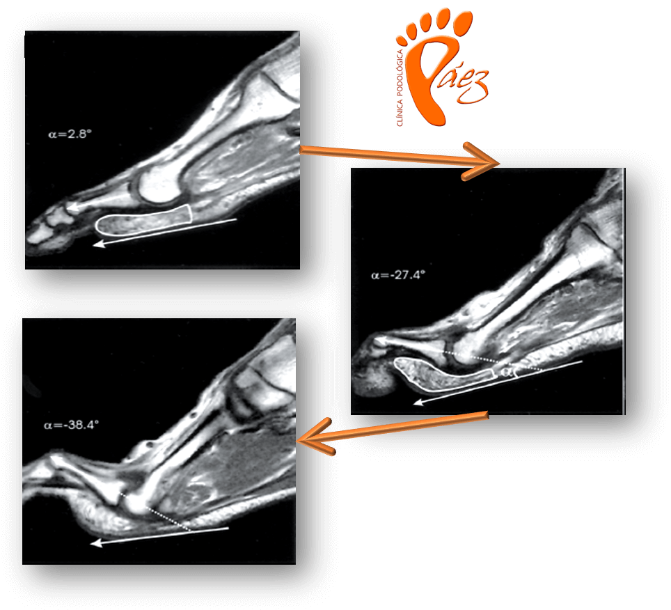
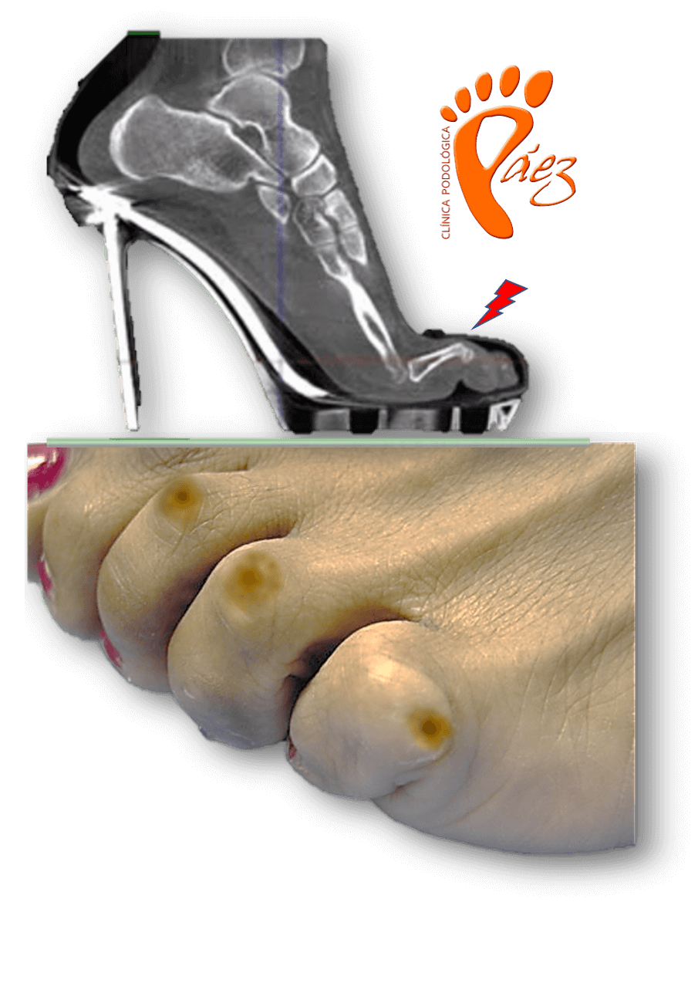

¿Qué son los Dedos en Garra?
Los Dedos en Garra son una deformación en el plano sagital de uno o más dedos menores de los pies, siendo más frecuente la afectación en 2º y 3º dedo.
Los Dedos en Garra provocan un mayor roce con el calzado y suelen ir acompañados de Callos y Helomas que producen dolor debido a la fricción con el calzado.

¿Por qué se produce los dedos en Garra?

La deformación está causada por la desviación de las articulaciones metatarsofalángicas y/o interfalángicas y un desequilibrio entre los tendones de los músculos flexores y extensores del y la musculatura propia del pie. Dedos excesivamente largos, Enfermedades Reumatológicas, Alteraciones Biomecánicas y Neurológicas son causa de la aparición del Dedo en Garra. El uso de calzado estrecho, fomenta y empeora el cuadro.

¿Cómo es la Cirugía del Dedo en Garra?
Cuando la deformación de los Dedos en Garra no mejora con el tratamiento conservador, se recomienda el tratamiento quirúrgico. En la Clínica Podológica Páez realizamos procedimientos donde se produce una realineación del dedo, con agujas reabsorbibles.
Los procedimientos quirúrgicos se realizan con anestesia local y en régimen ambulatorio (no precisan hospitalización) por lo que el paciente se va caminando a su casa.
Es una cirugía indolora y que permite una rápida incorporación a la vida normal del paciente.